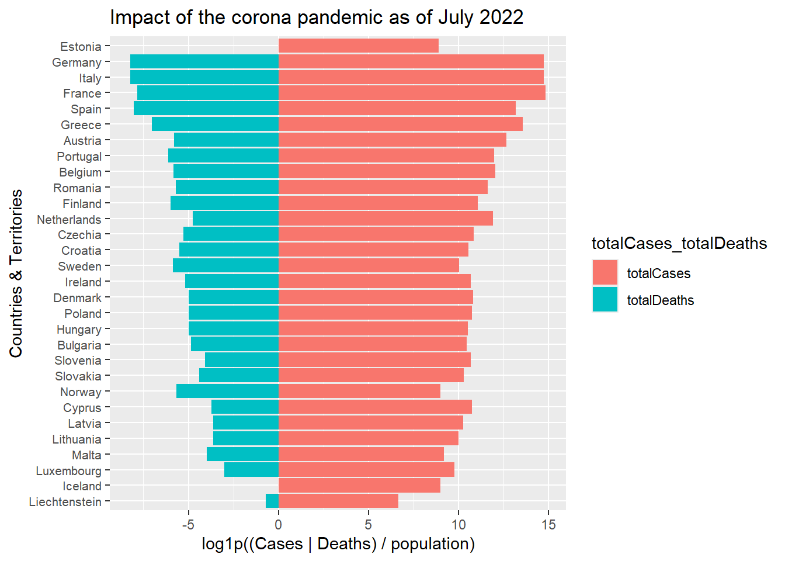

Analyzing covid cases using params
Selected parameters
covidData: data/CovidData.csv
covidYear: 2020
covidMonth: 1
Inspecting data
# reading covidData parameter
covidData <- read.csv(params$covidData)
# filtering on selected parameters
covidDataFil <- covidData %>% dplyr::filter(year==params$covidYear & month==params$covidMonth)
# inspect the selected tables
covidDataFil %>% reactable::reactable(defaultPageSize = 5, compact = TRUE, filterable = TRUE)Pseudocode pyramid plot
- change the geoId type to factor
- select the columns geoId and population
- calculate the total cases and deaths per geoId
- divide the cases and deaths per geoId by the geoId’s population (2020)
- make pyramid plot https://r-statistics.co/Top50-Ggplot2-Visualizations-MasterList-R-Code.html
# make geoId factor
covidDataFil$geoId <- factor(covidDataFil$geoId, levels = unique(covidDataFil$geoId))
# check type
str(covidDataFil$geoId)## Factor w/ 5 levels "CZ","FI","FR",..: 1 1 1 1 1 2 2 2 2 2 ...# select the columns geoId and population
cdGeoPop <- covidDataFil %>% select(geoId, countriesAndTerritories, popData2020) %>% unique()
# calulate total cases and deaths per geoId
totalCases <- aggregate(covidDataFil$cases, list(geoId = covidDataFil$geoId), sum)
names(totalCases)[2] <- "totalCases"
totalDeaths <- aggregate(covidDataFil$deaths, list(geoId = covidDataFil$geoId), sum)
names(totalDeaths)[2] <- "totalDeaths"
# merge dataframes together like left join would in SQL
covidDataJoined <- cdGeoPop %>%
left_join(totalCases, by="geoId") %>%
left_join(totalDeaths, by="geoId")
# normalize the data by dividing by population
covidDataJoined <- covidDataJoined %>% mutate(
casesNormalized=totalCases / popData2020,
deathsNormalized=totalDeaths / popData2020
)
# death and cases in the same row in preparation for the plot
covidDataJoined <- covidDataJoined %>% pivot_longer(cols=c(totalCases,totalDeaths), names_to = "totalCases_totalDeaths", values_to = "Normalized")
# check the dataframe
covidDataJoined## # A tibble: 10 × 7
## geoId countriesAndTerritories popData2020 casesNormalized deathsNormalized
## <fct> <chr> <int> <dbl> <dbl>
## 1 CZ Czechia 10693939 0 0
## 2 CZ Czechia 10693939 0 0
## 3 FI Finland 5525292 0.000000543 0
## 4 FI Finland 5525292 0.000000543 0
## 5 FR France 67320216 0.0000000891 0
## 6 FR France 67320216 0.0000000891 0
## 7 DE Germany 83166711 0.000000120 0
## 8 DE Germany 83166711 0.000000120 0
## 9 ES Spain 47332614 0.000000697 0
## 10 ES Spain 47332614 0.000000697 0
## # ℹ 2 more variables: totalCases_totalDeaths <chr>, Normalized <int># make totalCases_totalDeaths a factor
covidDataJoined$totalCases_totalDeaths <- factor(covidDataJoined$totalCases_totalDeaths, levels = unique(covidDataJoined$totalCases_totalDeaths))
# make pyramid plot
# https://stackoverflow.com/questions/14680075/simpler-population-pyramid-in-ggplot2
library(ggplot2)
covidDataJoined %>%
mutate(countriesAndTerritories_reordered = reorder(countriesAndTerritories, log1p(Normalized))) %>%
ggplot(aes(
x = log1p(Normalized) * ifelse(totalCases_totalDeaths == "totalDeaths", -1, 1), # if it's totalDeaths then multiply by -1 otherwise multiply by 1
y = countriesAndTerritories_reordered,
fill = totalCases_totalDeaths)) +
geom_col() +
labs(
title = paste(
"Impact of the corona pandemic as of",
month(params$covidMonth, label = TRUE, abbr = FALSE),
params$covidYear),
x = "log1p((Cases | Deaths) / population)",
y = "Countries & Territories") +
theme(axis.text.y = element_text(size = 8)) # text size y axis